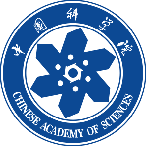
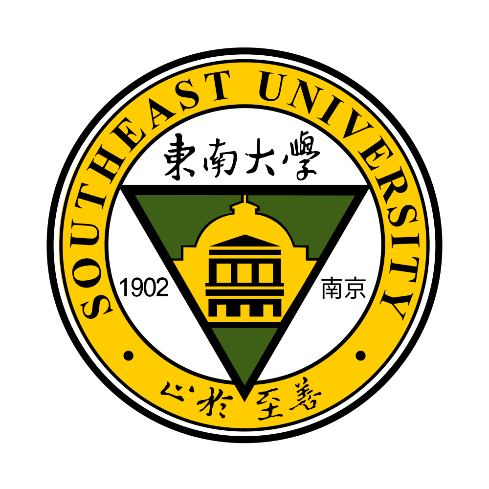
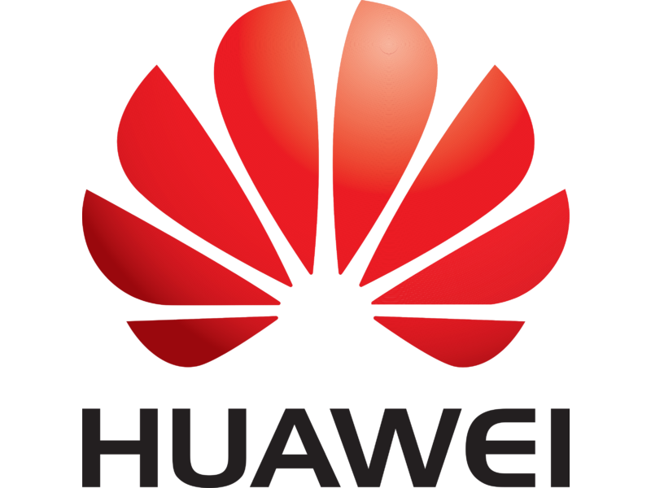

|
I am currently a 1st-year Ph.D. student at the University of Chinese Academy of Sciences (UCAS) and the Institute of Automation, Chinese Academy of Sciences (CASIA), advised by Prof. Changsheng Xu in the National Laboratory of Pattern Recognition (NLPR). My research focuses on agent post-training, with the goal of enabling agents to perceive the world and make complex decisions more like humans. It spans three directions:
My perspective is shaped by both research training and hands-on industry experience. I believe impactful research should not only push the boundaries of knowledge, but also solve real problems with scalable, simple, and robust methods. 我目前是中国科学院大学（UCAS）与中国科学院自动化研究所（CASIA）一年级博士生，就读于模式识别国家重点实验室（NLPR），导师为徐常胜研究员。我的研究聚焦于 agent 后训练，目标是让 agent 像人一样感知世界、做出复杂决策。主要包括三个方向：
我的视角同时来自科研训练和一线工业经验。我认为有影响力的研究不仅要拓展知识边界，还要用可扩展、简洁、稳健的方法解决真实问题。 Email Google Scholar GitHub OpenReview LinkedIn Xiaohongshu CV |
|
News
- [2026-09] Started my Ph.D. at UCAS / CASIA, advised by Prof. Changsheng Xu.
- [2026-08] OmniReasoner is accepted to EMNLP 2026 (Main).
Publications [ Full List ]
* Equal contribution
Education
-

University of Chinese Academy of Sciences (UCAS) 2026 — PresentPh.D. Student, Beijing -
 Institute of Automation, Chinese Academy of Sciences (CASIA) 2026 — PresentPh.D. Student, Beijing
Institute of Automation, Chinese Academy of Sciences (CASIA) 2026 — PresentPh.D. Student, Beijing -

Southeast University 2022 — 2026B.S. in Artificial Intelligence, Nanjing
Experience
-
Shopee · LLM Team Sep 2025 — Apr 2026Large Language Model Algorithm InternMultimodal agentic post-training.
-
Pinch · YC-backed AI startup Jan 2025 — Jun 2025Machine Learning Engineer InternVoice cloning and text-to-speech for AI simultaneous interpretation — preserving speaker identity while keeping translation fast and accurate.
-

Huawei · ICT Jun 2024 — Sep 2024AI Engineer InternMultimodal large-model training and inference optimization — accelerating and migrating workloads from GPUs to Ascend NPUs.
Academic Services
Conference Reviewer: ICML, ICLR, EMNLP
Contact
Reach me at yu.chen.8525@gmail.com.